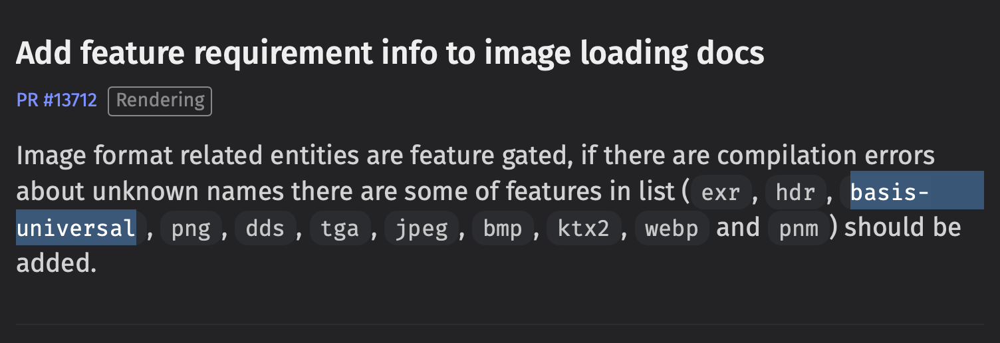

In this short post we look at how to debug a recent build breakage we encountered due to a feature being enabled on one of our dependencies that is not compatible with our build target: wasm.
What happened
After porting our bevy based game tinytakeoff to the newest Bevy release: 0.15 our build broke with the following error on wasm:
cargo:warning=In file included from vendor/basis_universal/encoder/pvpngreader.cpp:14:
cargo:warning=vendor/basis_universal/encoder/../transcoder/basisu.h:53:10: fatal error: 'stdlib.h' file not found
cargo:warning= 53 | #include <stdlib.h>
cargo:warning= | ^~~~~~~~~~
cargo:warning=1 error generated.
So it looks like some crate is trying to build C-code under the hood which depends on stdlib.h. While this is not a problem on native build targets, it will not work on Wasm.
The code in question belongs to the basis-universal crate, what could that be good for? Reading up on it's crates.io page we find out that it is:
Bindings for Binomial LLC's basis-universal Supercompressed GPU Texture Codec
Looking into the Bevy Migration Guide for 0.14 to 0.15 we find exactly one place of it being mentioned:
So this dependency is for sure nothing we need as we did not start making use of said image format. How did it get introduced?
Let's find the cause for this.
How to find the cause
We first want to find out where in our tree of dependencies this one is used. cargo tree is the tool to help you analyze your dependencies as the graph structure they make up.
When running cargo tree, we get over 1.000 outputted lines that we have to search, for somewhere inside this haystack is basis-universal:
│ │ ├── bevy_image v0.15.0
│ │ │ ├── basis-universal v0.3.1
│ │ │ │ ├── basis-universal-sys v0.3.1
│ │ │ │ │ [build-dependencies]
│ │ │ │ │ └── cc v1.2.3 (*)
We got a winner. It is used by bevy_image. The problem is that we do not know why. Based on the changelog linked above we know it is supposed to be behind a feature flag called basis_universal, looking at our Cargo.toml we do not enable it though.
Cargo will enable the minimum subset of
featuresneeded so that every dependency usingbevygets the features they ask for.
The question therefore is: Which crate asks for this feature?
Playing Cargo Feature Detective
There is a little-known feature in cargo tree that allows us to not only see our dependency tree but also the features that are enabled in each crate.
Running cargo tree -e features in our repository root we get over 3.000 lines of this:
├── winit v0.30.5
│ ├── tracing v0.1.41
│ │ ├── tracing-core v0.1.33
│ │ │ └── once_cell feature "default"
│ │ │ ├── once_cell v1.20.2
│ │ │ └── once_cell feature "std"
│ │ │ ├── once_cell v1.20.2
│ │ │ └── once_cell feature "alloc"
│ │ │ ├── once_cell v1.20.2
│ │ │ └── once_cell feature "race"
│ │ │ └── once_cell v1.20.2
│ │ ├── pin-project-lite feature "default"
│ │ │ └── pin-project-lite v0.2.15
│ │ └── tracing-attributes feature "default"
│ │ └── tracing-attributes v0.1.28 (proc-macro)
Luckily we now know already what feature we are looking for: basis-universal, so let's search for bevy feature "basis-universal":
├── bevy_libgdx_atlas feature "default"
│ └── bevy_libgdx_atlas v0.3.0
│ ├── bevy feature "basis-universal"
│ │ ├── bevy v0.15.0 (*)
Here we go. Our own crate bevy_libgdx_atlas enables the feature basis-universal which in turn enables the dependency basis-universal which breaks our build on wasm. That makes it easier to fix. Funny enough it was used to enable bevy_image while trying to depend on the smallest subset of features of bevy. This is a known issue in Bevy 0.15, see #16563. But there is a cleaner workaround by just enabling the bevy_image feature in bevy_internal see here.
Improving ergonomics
In case you run into multiple crates doing this and depending on said feature it is more ergonomic to invert the tree using: cargo tree -e features -p bevy --invert.
With this we limit our root to bevy and we will find one entry for the feature and a subtree of dependencies using it:
├── bevy feature "basis-universal"
│ └── bevy_libgdx_atlas v0.3.0
│ └── bevy_libgdx_atlas feature "default"
│ └── tinytakeoff v0.1.1
Conclusion
The feature option in cargo tree is a very powerful tool in fighting against the subtle way dependencies and features in them can creep into your codebase.
Since it is close to Christmas I want to make a wishlist to improve the situation:
- A
cargo denylike tool that allows me to white/blacklist features in dependencies. cargo treeshould generate a computer-readable format (ron/json whatever) to facilitate point 1.- In a perfect world there would be a
cargo tree-tuiallowing to interactively inspect dependencies, their features, and fan in (who uses it) and fan out (what it is using).
That being said cargo tree seems underutilized, so go and run it on your Bevy project to figure out what features of dependencies like Bevy you actually compile. This can have a huge impact on your wasm binary size!
Do you need support building your Bevy or Rust project? Our team of experts can support you! Contact us.